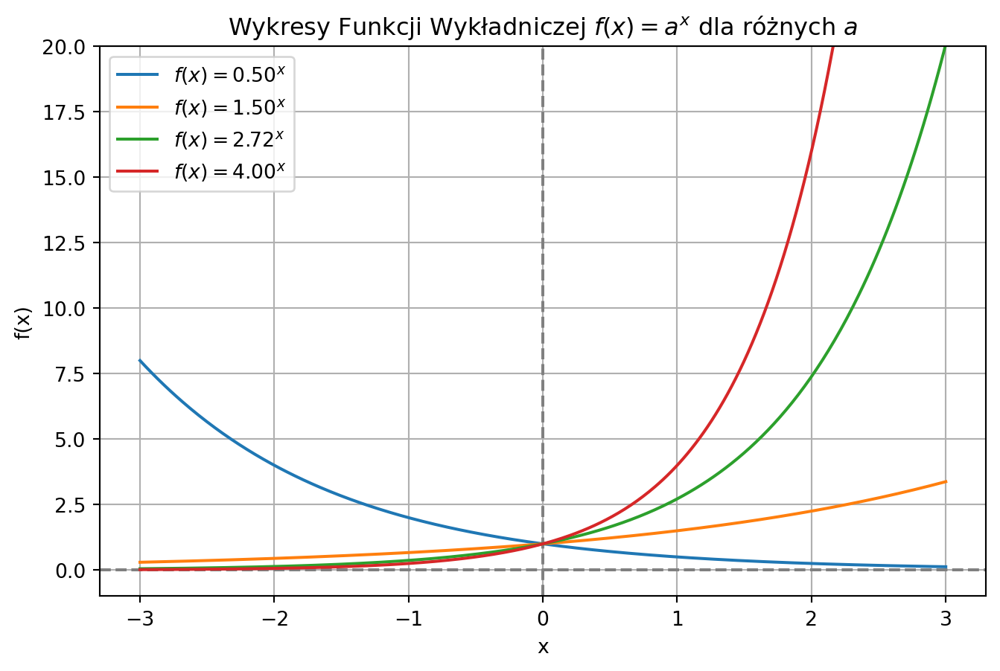
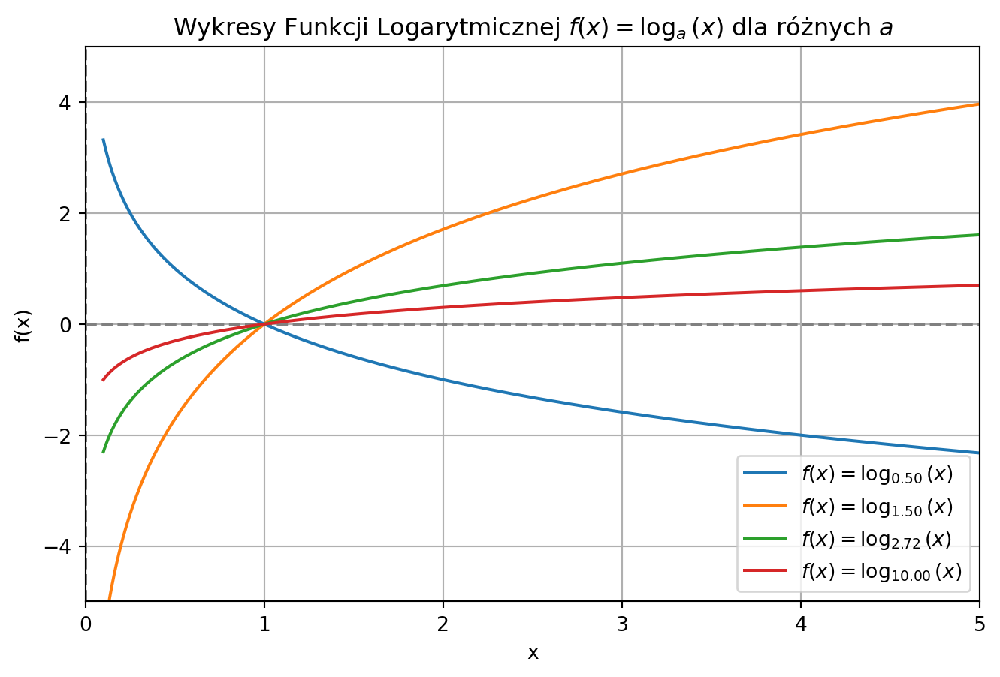
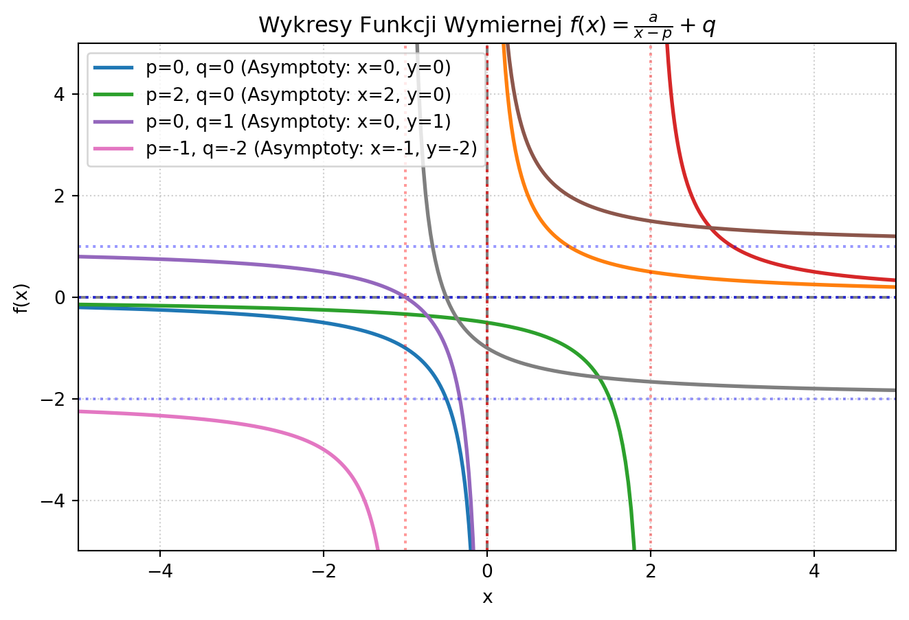
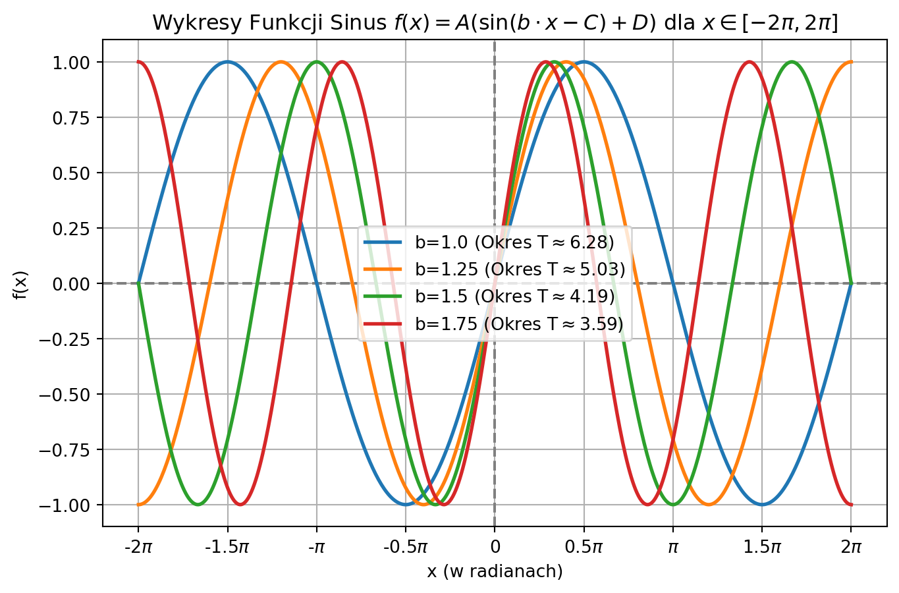
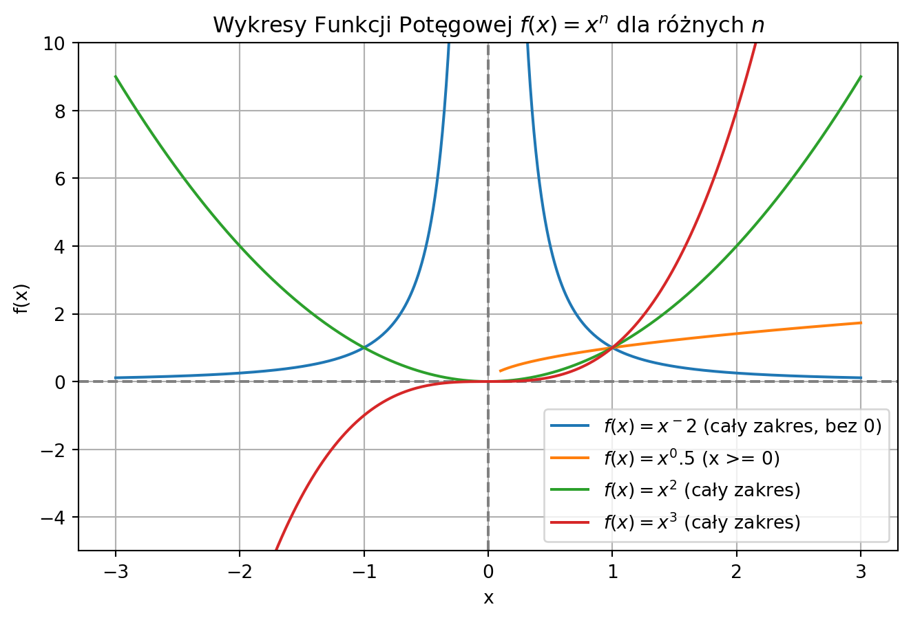

Funkcje matematyczne
Wstęp
W matematyce funkcje odgrywają kluczową rolę w opisie zjawisk rzeczywistych oraz w analizie zależności pomiędzy wielkościami. Mogą reprezentować wzrost populacji, zmianę temperatury lub tempo rozkładu chemicznego. Funkcje o różnych kształtach i właściwościach dostarczają różnych narzędzi do modelowania, a sposób ich zachowania często zależy od obecnych w nich parametrów. To właśnie parametry decydują o tym, jak wygląda wykres. Zmiana jednego parametru może całkowicie przeksztłacić funkcję, co w realnych zastosowaniach może odpowiadać na przykład spowolnieniu spadku populacji czy przesunięciu sygnału w czasie.
Poniżej przedstawiam pięć rodzaji funkcji. Dla każdej funkcji przestawiono:
Wzór wraz z oznaczeniami parametrów,
Charakterystykę matematyczną- dziedzinę,przeciwdziedzinę, punkty szczególne,
Opis wpływu parametrów na zachowanie wykresu,
Najważniejsze własności- monotoniczność, wypukłość, ektrema, asymptoty,
Wykresy funkcji dla czterech zestawów parametrów naniesione na jeden wykres,
1. Funkcja wykładnicza
- Wzór
\[ f(x) = a^{x} \]
Parametry:
- \(a\) - podstawa potęgi, gdzie \(a\in \mathbb{R}^{+}\), \(a\ne 1\),
- \(x\) - zmienna niezależna.
- Charakterystyka funkcji
- Dziedzina: \(\mathbb{R}\) - zbiór liczb rzeczywistych.
- Przeciwdziedzina: \(W = \mathbb{R} ^ {+} = (0,+\infty)\) - zbiór dodatnich liczb rzeczywistych.
- Punkty szczególne:
- funkcja nie ma miejsc zerowych,
- punkt przecięcia z osią \(OY\): \((0,1)\), ponieważ \(f(0) = a^{0} =1\).
- Opis Parametrów
- \(a\) - podstawa potęgi:
- określa kształt i monotoniczność funkcji (tempo/spadku),
- podstawa musi być dodatnia \(a>0\) i różna od \(a\ne 1\),
- jeśli \(a>1\), funkcja jest rosnąca (wzrost wykładniczy). Im większe \(a\), tym szybszy wzrost,
- jeśli \(0 < a < 1\), funkcja jest malejąca (zanik wykładniczy). Im mniejsze \(a\), tym szybszy spadek.
- \(a\) - podstawa potęgi:
- Własności
- Monotoniczność:
- jeśli \(a>1\), funkcja jest rosnąca w całej dziedzinie,
- jeśli \(0<a<1\), funkcja jest malejąca w całej dziedzinie.
- Ekstrema: funkcja nie ma ekstremów lokalnych (jest ściśle monotoniczna).
- Asymptoty:
- asymptota pozioma o równaniu: \(y = 0\) (oś \(OX\)),
- wykres zbliża się do osi \(OX\), ale jej nie dotyka.
- Wykres
2. Funkcja logarytmiczna
- Wzór
\[ f(x) = \log_{a}x \]
Parametry:
- \(x\) - zmienna niezależna, gdzie \(x > 0\),
- \(a\) - podstawa logarytmu, gdzie \(a \in \mathbb{R}^ {+}\), \(a\ne 1\).
- Charakterystyka funkcji
- Dziedzina: \(D = \mathbb{R} ^ {+} = (0, +\infty)\) - tylko liczby dodatnie.
- Przeciwdziedzina: \(W = \mathbb{R}\) - zbiór wszystkich liczb rzeczywistych.
- Punkty szczególne:
- miejsce zerowe: \(x_{0} = 1\), ponieważ \(f(1) = \log_{a}1 = 0\),
- punkt przecięcia z osią OY: Brak (oś \(OY\) jest asymptotą).
- Ważne: funkcja logatytmiczna jest funkcją odwrotną do funkcji wykładniczej.
- Opis parametrów
- \(a\) - podstawa logarytmu:
- podstawa musi być dodatnia \(a>0\) i różna od \(a\ne1\),
- określa monotoniczność i tempo zmian funkcji:
- jeśli \(a>1\), funkcja jest rosnąca,
- jeśli \(0 < a < 1\), funkcja jest malejąca.
- \(a\) - podstawa logarytmu:
- Własności
- Monotoniczność:
- jeśli \(a>1\), funkcja jest rosnąca w całej dziedzinie,
- jeśli \(0<a<1\), funkcja jest malejąca w całej dziedzinie.
- Ekstrema: funkcja nie ma ekstremów lokalnych (jest ściśle monotoniczna).
- Asymptoty: asymptota pionowa o równaniu \(x=0\) (oś OY).
- Monotoniczność:
- Wykres

3. Funkcja Wymierna
- Wzór
\[ f(x)= \frac{a}{x-p}+q \]
Parametry:
- \(a\) - współczynnik proporcjonalności, gdzie \(a\in\mathbb{R}\), \(a\ne 0\),
- \(p\) - przesunięcie w poziomie,
- \(q\) - przesunięcie w pionie.
- Charakterystyka funkcji
- Dziedzina: \(D =\mathbb{R}\setminus\{p\}\) - zbiór wszystkich liczb rzeczywistych.
- Przeciwdziedzina: \(W = \mathbb{R}\setminus\{q\}\) - zbiór wszystkich liczb rzeczywistych.
- Punkty szczególne:
- miejsce zerowe: \(x_{0}=p-\frac{a}{q}\), dla \(q\ne0\),
- punkty przecięcia z osią OY: (\(0\),\(\frac{a}{-q}\)), dla \(p\ne0\).
- Opis Parametrów
- \(a\) - współczynnik proporcjonalności:
- Określa, w których ćwiartkach znajdują się gałęzie hiperboli (po uwzględnieniu przesunięć \(p\) i \(q\)):
- jeśli \(a>0\), gałęzie leżą w I i III ćwiartce,
- jeśli \(a<0\), gałęzie leżą w II i IV ćwiartce.
- Określa odległość hiperboli od asymptot: im większa wartość bezwzględna \(|a|\), w tym hiperbola jest bardziej “odsunięta” od punktu (\(p,q\)).
- Określa, w których ćwiartkach znajdują się gałęzie hiperboli (po uwzględnieniu przesunięć \(p\) i \(q\)):
- \(p\) - przesunięcie w poziomie:
- określa położenie asymptoty pionowej: \(x=p\). Przesuwa wykres w prawo (\(p>0\)) lub w lewo (\(p<0\)).
- \(q\) - przesunięcie w pionie:
- określa położenie asymptoty poziomej: \(y=q\). Przesuwa wykres w górę \(q<0\) lub w dół \(q<0\).
- \(a\) - współczynnik proporcjonalności:
- Własności
- Monotoniczność: Funkcja jest monotoniczna w każdym z przedziałów swojej dziedziny:
- dla \(a > 0\): malejąca w (\(-\infty\),\(p\)) i malejąca w (\(p\),\(\infty\)),
- dla \(a < 0\): rosnąca w (\(-\infty\),\(p\)) i rosnąca w (\(p\),\(\infty\)).
- Ekstrema: funkcja nie ma ekstremów lokalnych.
- Asymptoty:
- asymptota pionowa: \(x=p\),
- asymptota pozioma: \(y=q\).
- Monotoniczność: Funkcja jest monotoniczna w każdym z przedziałów swojej dziedziny:
- Wykres

4. Funkcja Sinus
- Wzór
\[ f(x) = A \sin(B(x-C))+D \]
Parametry:
- \(x\) - argument w radianach lub stopniach,
- \(f(x)\) - wartość funkcji (rzut na oś Y),
- \(A,B,C,D\) - cztery parametry wpływające na kształt i położenie wykresu.
- Charakterystyka funkcji
- Dziedzina: \(D = \mathbb{R}\) - zbiór wszystkich liczb rzeczywistych.
- Przeciwdziedzina: \(W= [D-|A|,D+|A|]\).
- Punkty szczególne:
- miejsca zerowe: \(x_k=k\pi\), gdzie \(k\in\mathbb{Z}\),
- punkt przecięcia z osią \(OY\): (\(0,0\)).
- Opis Parametrów
- \(A\) (Amplituda): zmienna wysokość fali(maksymalne wychylenie od osi \(X\)). W \(f(x) = \sin(x)\) jest to \(A = 1\).
- \(B\) (Częstość): zmienia okres funkcji. W \(f(x) = \sin(x)\) jest to \(B=1\).
- \(C\) Przesunięcie fazowe: przesuwa wykres w poziomie.
- \(D\) Przesunięcie pionowe: przesuwa wykres w pionie.
- Własności
- Okresowość: Funkcja jest okresowa z okresem podstawowym \(T=\frac{2\pi}{|B|}\).
- Monotoniczność:
- funkcja nie jest monotoniczna w całej dziedzinie,
- przykład: rosnąca w [\(-\frac{\pi}{2}+ 2k\pi, \frac{\pi}{2}+2k\pi\)]; malejąca w [\(\frac{\pi}{2}+ 2k\pi, \frac{3\pi}{2}+2k\pi\)].
- Ekstrema
- maksima lokalne: \(y_{max} = 1\) dla \(\frac{\pi}{2}+ 2k\pi\),
- minima lokalne: \(y_{min} =-1\) dla \(\frac{3\pi}{2}+2k\pi\).
- Parzystość/Nieparzystość: funkcja jest nieparzysta (\(f(-x) = -f(x)\)).
- Asymptoty: funkcja nie ma asymptot.
- Wykres

5. Funkcja potęgowa
- Wzór
\[ {f(x) = x^{n}} \]
Parametry:
- \(x\) - podstawa(zmienna niezależna),
- \(n\) - wykładnik.
Charakterystyka funkcji
- Dziedzina: \(D = \mathbb{R}\)
- Przeciwdziedzina:
- \(W = [0,+\infty)\), dla \(n\) parzyste,
- \(W=\mathbb{R}\), dla \(n\) nieparzyste.
- Punkty szczególne:
- miejsca zerowe: \(x_{0} = 0\),
- punkty przecięcia: \((0,0)\).
Opis parametrów
- \(n\) (Wykładnik):
- decyduje o kształcie i symetrii wykresu,
- \(n\) parzyste: wykres jest symetryczny względem osi \(OY\) (jak parabola \(x^{2}\)). Wraz ze wzrostem \(n\), ramiona stają się bardziej strome, a obszar między \(-1\) a \(1\) jest bardziej spłaszczony,
- \(n\) nieparzyste: wykres jest symetryczny względem początku układu współrzędnych (jak \(x^{3}\)). Wraz ze wzrostem \(n\), wykres staje się bardziej stromy.
- \(n\) (Wykładnik):
Własności
- dla \(n\) parzyste:
- Monotoniczność: malejąca w \((-\infty,0]\), rosnąca w \([0,+\infty)\),
- Ekstrema: minimum globalne: w punkcie \(x=0\), \(y_{min} = 0\),
- Parzystość/Nieparzystość: funkcja jest parzysta,
- Asymptoty: funkcja nie ma asymptoty.
- dla \(n\) nieparzysta
- Monotoniczność: rosnąca w całej dziedzinie \(\mathbb{R}\),
- Ekstrema: brak ekstremów,
- Parzystość/Nieparzystość: funkcja jest nieparzysta,
- Asymptoty: funkcja nie ma asymptoty.
- Wykres
